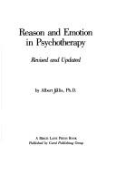

Reason and Emotion in Psychotherapy: Revised and Updated
Book·Albert Ellis, 1962·心理治疗中的理性与情绪

Ellis sets out rational emotive behavior therapy and the ABC model: distress comes from irrational beliefs about events.
- Author
- Albert Ellis
- Year
- 1962
- Difficulty
- Intermediate
- Kind
- Primary text
- Schools
- Cognitive Therapies
- Core theories
- REBT ABC Model
Editions
- English edition Reason and Emotion in Psychotherapy: Revised and Updated Albert Ellis · Birch Lane Press (Carol Publishing), revised edition · 1994 Open Library ↗